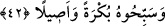

Yâni ‘Allâh’ı çok sevin’ demektir. Çünkü Hz. Peygamber (s.a.): “Kim bir şeyi severse
onu çok zikreder/anar.”[239] buyurmuştur. Dostluğun alâmeti, dili dostun zikrinden,
gönlü dostu anmaktan uzak tutmamaktır.
Hiçbir yerde senin düşüncenden uzak değilim,
Hiçbir zaman senin zikrinden gâfil değilim.
Böylece Allah çok zikir emrindeki işâretle kendisine muhabbeti vâcib kılmıştır. Bunu
açık ibâre yoluyla değil de işâret yoluyla vâcib kılmıştır. Çünkü muhabbet ehli, dünyâ
ve âhiret boyunduruğundan hür ve âzâdedir. Hür olana da işâret yeterlidir. Allah
muhabbetin vâcib olduğunu açıktan buyurmamıştır. Çünkü bu muhabbet, insanlar
arasında belli bir zümreye mahsus olup avâmın işi değildir. Nitekim Allah Teâlâ şöyle
buyuruyor: “Allah sevdiği ve kendisini seven bir toplum getirecektir.” (el-Maide,
5/54). Buna göre “Öyle ise siz beni (ibâdetle) anın ki ben de sizi anayım.” (el-Bakara,
2/152) âyeti, siz beni sevin ben de sizi seveyim manasına işâret etmektedir.
Muhabbet deryâsına âşinâ ol,
Sedef gibi saflık içinde maden ol!
42. Ve O’nu sabah-akşam tesbih edin.
“Ve O’nu sabah” gündüzün evvelinde “akşam” gündüzün sonunda “tesbih edin.”
Allah Teâlâ’yı O’na uygun olmayan şeylerden tenzih edin.
el-Müfredât’ta der ki: “ suda veya havada süratle geçip gitmek/yüzmektir. “ ise Allâh’ı tenzîh etmektir. Tesbihin asıl anlamı, Allâh’a ibâdette hızlı geçip gitmektir.
Sonra sözlü, fiili ve niyetle olan bütün ibâdetlere genel olarak “tesbîh” denilmiştir.”
Bazen bir şeyin iki ucu zikredilir ve onlardan ortası da anlaşılır. Buna göre mânâ
şöyle olur: Allâh’ı bütün vakitlerde tesbih edin. Özellikle melekler tarafından şâhid
olunduğu için diğer vakitlerden üstün kılınan mezkur iki vakitte tesbîh edin. Nitekim Hz.
Peygamber (s.a.)’in şu hadîsi buna delâlet etmektedir: “Birtakım melekler geceleyin,
diğer birtakımı da gündüz vakti birbiri ardınca gelip sizin aranızda bulunurlar.”[240]
Zikirler arasından yalnız tesbîhin yalnız getirilmesi, tahliye (hı ile boşaltıp temizleme)
bâbından olması bakımından zikirler içinde tesbîh esas ve asıl olduğu içindir. Nitekim
bir hadîste şöyle buyrulmuştur: “Dört zikir vardır ki cünüb olan kimse (bile) onlardan
alıkonulmaz: Sübhânallah, el-Hamdü lillâh, Lâ ilahe illallah ve Allahu ekber.”[241]
Cünüb kimse bunları söyleyebildiğine göre abdestsiz olan evleviyetle söyleyebilir. Şu
halde bütün hallerde tesbîhe bir mâni yoktur. Ancak abdestli ve temiz olarak zikretmek
Allah adamlarının âdâbındandır.
Keşfü’l-esrâr’da şöyle denilmiştir: “O’nu sabah tesbih edin.” sabah namazını kılın,